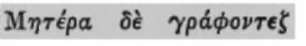
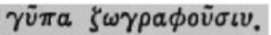
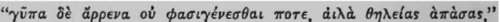
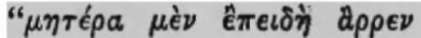
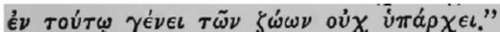

Endnotes
Description
This section is from the book "Leonardo Da Vinci: A Psychosexual Study Of An Infantile Reminiscence", by Sigmund Freud. Also available from Amazon: Leonardo da Vinci: A Psychosexual Study of an Infantile Reminiscence.
Endnotes
1 [English translation of Fine Kindheitserinnerung des Leonardo da VinciOriginally published in Schriften zur Angewandten Seelen-kunde herausgegeben von Prof. Dr. Sigm. Freud, siebentes Helt (Wien und Leipzig: 1910) — ed.]
2 [Bachelor of Philosophy — ed.]
3 In the words of J. Burckhard[t], cited by Alexandra] Kon-stantinowa, Die Entwicklung des Madonnentypus fbeij Leonardo da Vinci, Strassburg, 1907. [The English ed. has "by".]
4 [Giorgi Vasari, Vite de'piu eccellentipittori, scultori et architettori, LXXXIII. 1550-1584.]
5 Traktat von der Malerei, new edition and introduction by Marie Herzfeld, E. Diederichs, Jena, 1909.
6 [Edmondo] Solmi. "La resurrezione dell' opera di Leonardo" in the collected work Leonardo da Vinci. Conferenze Fiorentine, Milan, 1910.
7 [Giovanni Lomazzo (1538-1600. Nino Smiraglia Scognamiglio]. Ricerche e documentisulla giovinezza di Leonardo da Vinci. Napoli, 1900.
8 W. v. Seidlitz. Leonardo da Vinci, der Wendepunkt der Renaissance, 1909, Bd. I, p. 203.
9 W. v. Seidlitz, Joe. cit. Bd. II, p. 48.
10 [Walter] Pater [(1839-1894)]. The Renaissance, p. 107, The Macmillan Co., 1910. "But it is certain that at one period of his life he had almost ceased to be an artist."
11 Cf. v. Seidlitz, Bd. I, die Geschichte der Restaurations-und Rettungsversuche.
12 [Eugene] Miintz. Leonard de Vinci, Paris, 1899, p. 18. (A letter of a contemporary from India to a Medici alludes to this peculiarity of Leonardo given by [Jean-Paul] Richter: The literary works of Leonardo da Vinci.)
13 F. Botazzi. Leonardo biologo e anatomico. Conferenze Fiorentine, p. 186. 1910.
14 E. Solmi: Leonardo da Vinci. German Translation by Emmi Hirschberg. Berlin, 1908.
15 Marie Herzfeld: Leonardo da Vinci der Denkei; Forscher und Poet. Second edition. Jena, 1906.
16 His collected witticisms—belle facezie—which are not translated, may be an exception. Cf. Herzfeld, Leonardo da Vinci, p. 151.
17 According to Scognamiglio (loc. cit. p. 49) reference is made to this episode in an obscure and even variously interpreted passage of the Codex Atlanticus:" Quando io feci Domened-dio putto voi mi nietteste in prigione, ora s 'io lo fo grande, vol mi farete peggio. "
18 [Merezhkovsky, Dmitry Sergeyevich, 1865-1941]: The Romance of Leonardo da Vinci, translated by Herbert Trench, G. P. Putnam Sons, New York. It forms the second volume of the historical Trilogy entitled Christ and Anti-Christ, of which the first volume is Julian Apostata, and the third volume is Peter the Great and Alexei.
19 Solmi loc. cit. p. 46.
20 Filippo Botazzi, loc. cit. p. 193.
21 Leonardo da Vinci, Traktat von der Malerei, [ed. by Marie Herz-feld]. Jena, 1909 (Chap. I, 64).
22 "Such transfiguration of science and of nature into emotions, or one might say, religion, is one of the characteristic traits of da Vinci's manuscripts, which one finds expressed hundreds of times." Solmi: "La resurrezione, etc.", p. 11.
23 "La resurrezione, etc.", p. 8: "Leonardo placed the study of nature as a precept to painting . . . later the passion for study became dominating, he no longer wished to acquire science for art, but science for science's sake."
24 For an enumeration of his scientific attainments see Marie Herz-feld's interesting introduction (Jena, 1906) to the essays of the Confer cnze Florentine, 1910, and elsewhere.
25 For a corroboration of this improbable sounding assertion see the "Analysis of the phobia of a five-year-old boy," Jahrbuch fur psychoanalytische und psychopadiologische Forschungen, Bd. I, 1909, and the similar observation in Bd. II, 1910. In an essay concerning "Infantile Theories of Sex" (Sammlungen kleiner Schriften zur Neurosenlehre, p. 167, Second Series, 1909), I wrote: "But this reasoning and doubting serves as a model for all later intellectual work in problems, and the first failure acts as a paralyzer for all times."
26 Scognamigiio Joe. eit, p. 15.
27 Cited by Scognamigiio from the Codex Adantieus, p. 65: "Questo scriver si distintamente del nibio par ehe sia mio destino, perche nella mia prima ricordatione della mia in-fantia e mi pare a ehe essendo io in eulla, ehe un nibio venissi a me e mi aprissi la bocca eolla sua eoda e molte volte mi per-euotesse eon tal eoda dentro alle labbra. "
28 Cf. here the "Bruchstiick einer Hysterieanalyse," in Neurosenlehre, Second series, 1909.
29 Horapollo: Hieroghphiea 1,11. 

30 * [Wilhelm Heinrich Roscher]: A us fuhrliches Lexicon der griechischen und ldmischen Mythologie. Artikel "Mut," II Bd., 1894-1897.-[Rodolfo Vittorio] Lanzone. Dizionario di Mitologia egizia. Torino, 1882.
31 [Hermine] Hartleben, Champollion. Sein Leben und sein Werk, 1906.
32  cited by L.S.A.M v. Romer. "Uber die androgynische Idee des Lebens," Jahrb. f Sexuelle Zwischenstufen, V, 1903, p. 732.
33 Plutarch: Veluti scarabaeos mares tan turn esse putarunt Aegyptii sic inter vultures mares non inveniri statuerunt.
34 Horapollinis Niloi Hieroglyphica edidit Conradus Leemans Amstelodami, 1835. The words referring to the sex of the vulture read as follows (p. 14): 

35 E. Muntz, loc. tit, p. 282.
36 E. Miintz, loc. tit.
37 [Meaning the Virgin birth — ed.]
Continue to:
Tags
Leonardo da Vinci, Sigmund Freud, mentality, psychoanalytic, sexuality